Metodyka badań i analiz środowiskowych
Projekt - analiza jakościowa powietrza
Grupa projektowa
nr.2
Wstęp
Celem projektu jest zapoznania się z technikami analizy danych z systemu monitoringu jakości powietrza. Projekt obejmuje ocenę ilościową danych, ocenę jakości powietrza, analizę wpływu czynników meteorologicznych oraz wyznaczenie trendów zmian stężeń zanieczyszczeń w powietrzu.
1. Charakterystyka obszaru badań
Obszarem badań są okolice Kielc, wybrałem stamtąd dwie stacje pomiaru jakości powietrza AQMS z portalu jakości powietrza GIOŚ, jedna na ulicy Warszawskiej 108, jej kod krajowy to: SkKielWarsz1, jest to stacja na której pomiary prowadzone są metodą automatyczną, Na tej stacji mierzy się PM10(1h) oraz takie zanieczyszczenia jak : CO, C6H6, NO2
Druga stacja zlokalizowana jest na ulicy Targowej 3, a jej kod krajowy to: SkKielTargow, pomiary są wykonywane metodami automatyczno-manualnymi, mierzy się tu stężenia substancji takich jak: PM2.5, PM10, SO2, C6H6, NO2, O3
Dla obu stacji wybrana została stacja meteorologiczna o kodzie USAF-WBAN: 125700-99999
W Kielcach ważnym czynnikiem oddziałującym na jakość powietrza będzie transport drogowy, czy także różne zakłady przemysłowe, elektrociepłownie itp.
2. Przygotowanie danych
Na początku postępując zgodnie z instrukcjami na zajęciach z pliku intro_download_data pobrałem dane z wielu lat oraz wyselekcjonowalem te dotyczace moich stacji, zaimportowalem metadane oraz polaczylem dane aqm i meteo w wyniku czego powstal dataframe aqm_met
Poniżej mapki obrazujące obszar analizy:
Mapa stacji pomiarowych:
Mapy z lokalizacją stacji meteorologicznych w Polsce:
NULLoraz w okolicach Kielc:
3. Ocena ilościowa danych
Przeglądnąłem dane, stacja na ulicy Warszawskiej powstała dosyć niedawno bo w 2021 r. a stacja na ulicy Targowej zaczęła działać w 2018r r., dlatego wybrałem do analizy lata 2021-2022.
Na pierwszym wykresie widzimy pomiary subtancji takich jak: PM2.5, PM10, SO2, C6H6, NO2 dla stacji SkKielTargow: Można zauważyć znaczne zanieczyszczenie powietrza NO2 na przestrzeni dwóch lat, wzrost stężenia SO2 w okresie od października do kwietnia, w podobnym okresie widać wzrost w PM10 i PM2.5
Wyświetl lub zwiń kod
load("proj.RData")
aqm_met %>%
filter(kod == "SkKielTargow") %>%
selectByDate(year = 2021:2022) %>%
timePlot(mydata = ,
pollutant = c("SO2","NO2","PM2.5","PM10"),
y.relation = "free")->wykres1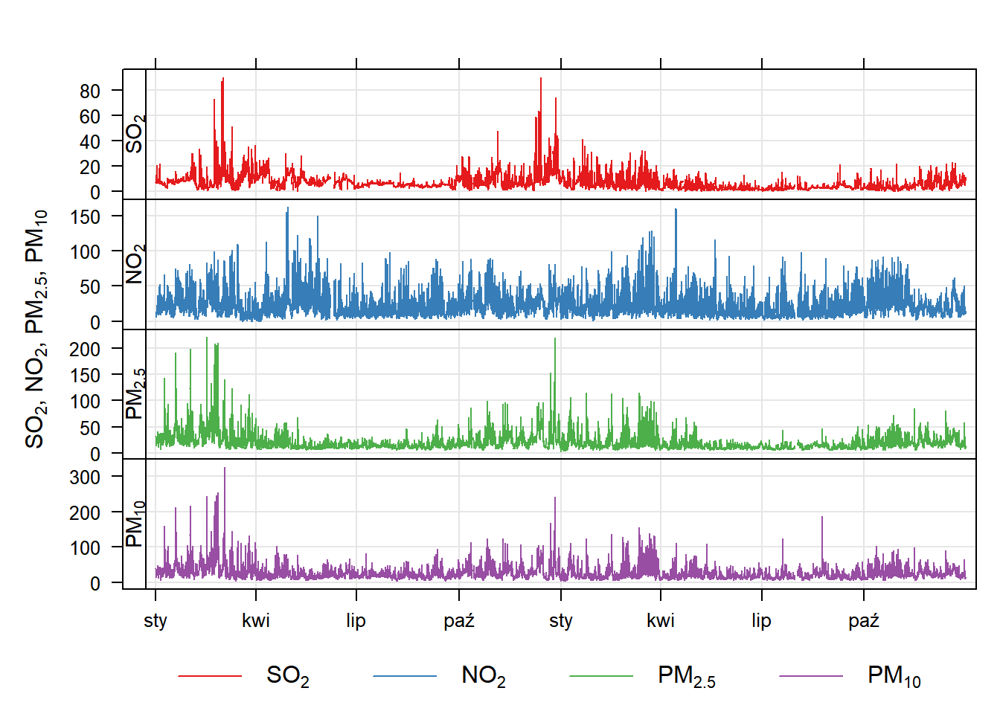
Drugi wykres pokazuje pomiary stężeń NO2, PM10 oraz C6H6 na stacji SkKielWarsz1. Tutaj również widać największe zanieczyszczenie powietrza przez NO2 w okresie 2021-2022. W przypadku PM10 znaczny wzrost zanotowano między styczniem a kwietniem 2022 r. Stężenie C6H6 wzrosło na przełomie 2021 i 2022 r.
Wyświetl lub zwiń kod
aqm_met %>%
filter(kod == "SkKielWarsz1") %>%
selectByDate(year = 2021:2022) %>%
timePlot(mydata = ,
pollutant = c("NO2","PM10","C6H6"),
y.relation = "free")->wykres2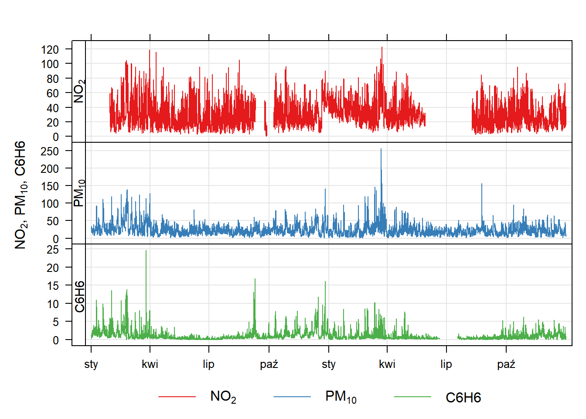
Trzeci wykres ukazuje pokazano jak na przestrzeni lat 2021-2022 zmieniło się stężenie NO2. Widać że poziom stężenie w powietrzu oscyluje na podobnym poziomie. Jako że lata te to okres po pandemii możliwe że zakłady przemysłowe, transport, rolnictwo itp. chcąc odbudować straty po tym czasie poprzez wzmożone działania przyczyniły sie do tak dużego stężenia NO2.
Wyświetl lub zwiń kod
#| code-fold: true
aqm_met %>%
selectByDate(year = 2021:2022) %>%
timePlot(mydata = ,
pollutant = c("NO2"),
x.relation = "free",
y.relation = "free",
type = "kod")->w3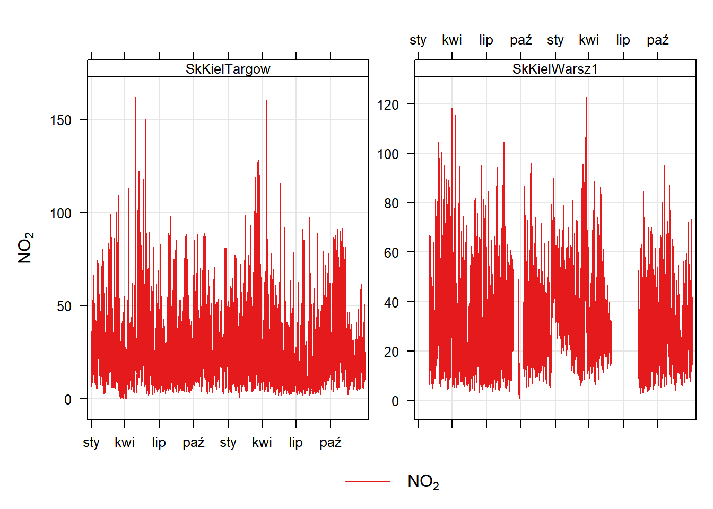
Sprawdzone zostało także czy temperatura miała wpływ na stęzenie na kolejnym wykresie. Jak można zauważyć, niższe temperatury spowodowały wzrost stężenia NO2. Wywnioskować można zatem że w okresie grzewczym stężenie to wzrasta, ponieważ używajac paliw stałych, takich jak węgiel, drewno czy olej opałowy do ogrzewania domów, przemysł oraz transport również mógł mieć znaczacy wpływ na to.
Wyświetl lub zwiń kod
aqm_met %>%
selectByDate(year = 2021:2022) %>%
timePlot(mydata = ,
pollutant = c("air_temp", "NO2"),
y.relation = "free",
type = "kod",
avg.time = "day")->w4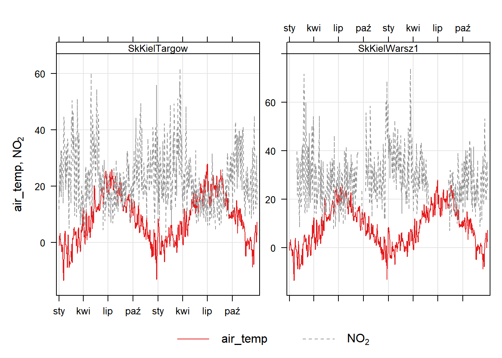
Sprawdzając dokładniej w jakim zakresie temperatur stężenie na stacji SkKielTargow najbardziej rosło widać, że było to w zakresie 15.5-35.3 stopni Celsjusza, gdy temperatura spadała poniżej zera również widać wzrost chociaż nie tak wysoki.
Wyświetl lub zwiń kod
aqm_met %>%
filter(kod == "SkKielTargow") %>%
selectByDate(year = 2021:2022, month = 1:12) %>%
timeProp(pollutant = "NO2",
proportion = "air_temp",
avg.time = "month",
key.columns = 2,
key.position = "top",
breaks = seq(0, 10, by = 1)) -> w5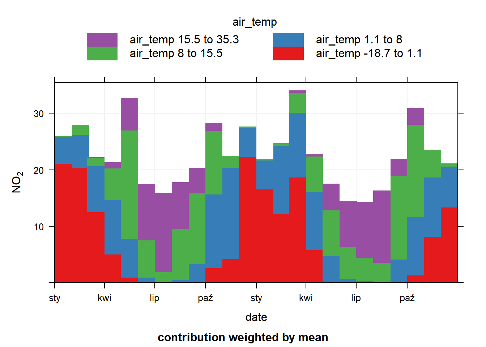
4. Ocena jakości powietrza
W tym rozdziale sprawdziłem kompletność danych w latach 2018-2022 czyli okres w ktorym stacja SkKielTargow zaczeła działać, dla stacji SkKielWarsz1 do sprawdzenia kompletności danych przeanalizowane tak naprawde zostaną tylko dwa lata jako że uruchomiono tą stację w 2021 r, za dane kompletne uznałem posiadanie co najmniej 90% danych z pomiarów w ciagu roku.
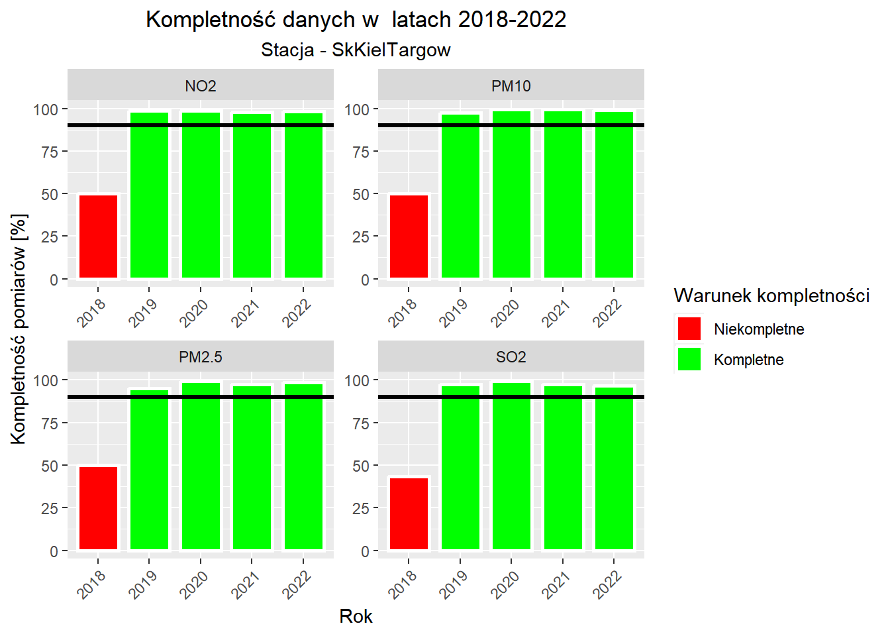
Dla stacji SkKielWarsz1 sprawdziłem kompletność pomiarów dla CO i C6H6 jako że na tej stacji nie mierzy sie stężenia PM2.5 oraz S02
Wyświetl lub zwiń kod
wykres2 <- ggplot(aqm_ocena_2, aes(x = factor(year), y = dat.cap, fill = dat.cap > 90)) +
geom_bar(stat = "identity", color = "white", size = 1, width = 0.8) +
scale_y_continuous(limits = c(0, 100)) +
scale_x_discrete(breaks = unique(aqm_ocena_2$year)) +
theme(axis.text.x = element_text(angle = 45, hjust = 1)) +
facet_wrap(~ pollutant, scales = "free", nrow = 2, ncol = 2) +
labs(
title = "Kompletność danych w poszczególnych latach",
subtitle = "Stacja - SkKielWarsz1",
x = "Rok",
y = "Kompletność pomiarów [%]",
fill = "Warunek kompletności"
) +
theme(
plot.title = element_text(hjust = 0.5),
plot.subtitle = element_text(hjust = 0.5),
panel.background = element_rect(fill = "lightgray"),
panel.grid.major.y = element_line(color = "white", linetype = "dotted"),
panel.grid.minor.y = element_blank(),
strip.text = element_text(face = "bold", size = 12, color = "blue"),
strip.background = element_rect(fill = "yellow", color = "black", size = 1),
legend.key = element_rect(fill = "gray90", color = "black"),
legend.title = element_text(face = "italic", size = 10),
legend.text = element_text(size = 8),
legend.position = "bottom"
) +
scale_fill_manual(
values = c("red", "green"),
labels = c("Niekompletne", "Kompletne")
) +
geom_hline(yintercept = 90, linetype = "dashed", color = "black", size = 1.2)
wykres2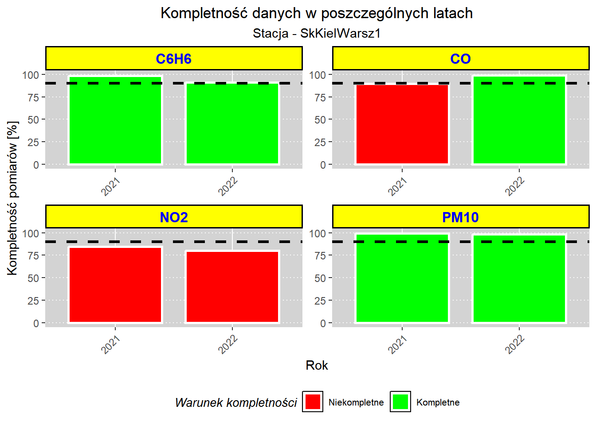
4.1 Poziomy stężeń substancji
Sprawdźmy teraz jak prezentuje sie poziom zanieczyszczeń powietrza substancją pyłową PM10, dopuszczalne roczne stężenie wynosi 40 µg/m3:
Wyświetl lub zwiń kod
library(gridExtra)
wykres4 <- ggplot(data = subset(aqm_ocena_1, dat.cap >= 90 & pollutant == "PM10"),
aes(x = factor(year), y = mean, fill = mean < 40)) +
geom_bar(stat = "identity", position = "stack", color = "white", size = 1, width = 0.8) +
scale_y_continuous(limits = c(0, 60)) +
scale_fill_manual(values = c("TRUE" = "#3498db", "FALSE" = "#e74c3c")) +
geom_hline(yintercept = 40, linetype = "solid", color = "black", size = 1.2) +
labs(
title = "Średnioroczne wartości stężenia PM10 w powietrzu",
subtitle = "Stacja - SkKielTargow",
x = "",
y = "Wartość średnioroczna\n[μg/m3]",
fill = "Poziom dopuszczalny"
) +
theme(plot.title = element_text(hjust = 0.5),
plot.subtitle = element_text(hjust = 0.5),
legend.position = "bottom",
legend.title = element_blank(),
panel.background = element_rect(fill = "#ecf0f1"),
axis.title.x = element_blank(),
axis.text.y = element_text(size = 10))
wykres5 <- ggplot(data = subset(aqm_ocena_2, dat.cap >= 90 & pollutant == "PM10"),
aes(x = factor(year), y = mean, fill = mean < 40)) +
geom_bar(stat = "identity", position = "stack", color = "white", size = 1, width = 0.8) +
scale_y_continuous(limits = c(0, 60)) +
scale_fill_manual(values = c("TRUE" = "#2ecc71", "FALSE" = "#e74c3c")) +
geom_hline(yintercept = 40, linetype = "solid", color = "black", size = 1.2) +
labs(
subtitle = "Stacja - SkKielWarsz1",
x = "Rok",
y = "Wartość średnioroczna\n[μg/m3]",
fill = "Poziom dopuszczalny"
) +
theme(plot.title = element_text(hjust = 0.5),
plot.subtitle = element_text(hjust = 0.5),
legend.position = "bottom",
legend.title = element_blank(),
panel.background = element_rect(fill = "#ecf0f1"),
axis.title.x = element_blank(),
axis.text.y = element_text(size = 10))
grid.arrange(wykres4, wykres5, nrow = 2)
Jak widać, w żadnym roku nie został przekroczony poziom stężenia PM10 na terenie Kielc, widać że stężenie to oscyluje przez większość czasu w okolicach połowy dopuszczalnej maksymalnej rocznej wartości.
To samo zróbmy dla NO2, tutaj podobnie jak w przypadku PM10 dopuszczalne stężenie w roku kalendarzowym wynosi 40 µg/m3:
Wyświetl lub zwiń kod
wykres6 <- ggplot(data = subset(aqm_ocena_1, dat.cap >= 90 & pollutant == "NO2"),
aes(x = factor(year), y = mean, fill = mean < 40)) +
geom_bar(stat = "identity", position = "stack", color = "white", size = 1, width = 0.8) +
scale_y_continuous(limits = c(0, 60)) +
scale_fill_manual(values = c("TRUE" = "#3498db", "FALSE" = "#e74c3c")) +
geom_hline(yintercept = 40, linetype = "solid", color = "black", size = 1.2) +
labs(
title = "Średnioroczne wartości stężenia NO2 w powietrzu",
subtitle = "Stacja - SkKielTargow",
x = "",
y = "Wartość średnioroczna\n[μg/m3]",
fill = "Poziom dopuszczalny"
) +
theme(plot.title = element_text(hjust = 0.5),
plot.subtitle = element_text(hjust = 0.5),
legend.position = "bottom",
legend.title = element_blank(),
panel.background = element_rect(fill = "#ecf0f1"),
axis.title.x = element_blank(),
axis.text.y = element_text(size = 10))
wykres7 <- ggplot(data = subset(aqm_ocena_2, dat.cap >= 80 & pollutant == "NO2"),
aes(x = factor(year), y = mean, fill = mean < 40)) +
geom_bar(stat = "identity", position = "stack", color = "white", size = 1, width = 0.8) +
scale_y_continuous(limits = c(0, 60)) +
scale_fill_manual(values = c("TRUE" = "#2ecc71", "FALSE" = "#e74c3c")) +
geom_hline(yintercept = 40, linetype = "solid", color = "black", size = 1.2) +
labs(
subtitle = "Stacja - SkKielWarsz1",
x = "Rok",
y = "Wartość średnioroczna\n[μg/m3]",
fill = "Poziom dopuszczalny"
) +
theme(plot.title = element_text(hjust = 0.5),
plot.subtitle = element_text(hjust = 0.5),
legend.position = "bottom",
legend.title = element_blank(),
panel.background = element_rect(fill = "#ecf0f1"),
axis.title.x = element_blank(),
axis.text.y = element_text(size = 10))
grid.arrange(wykres6, wykres7, nrow = 2)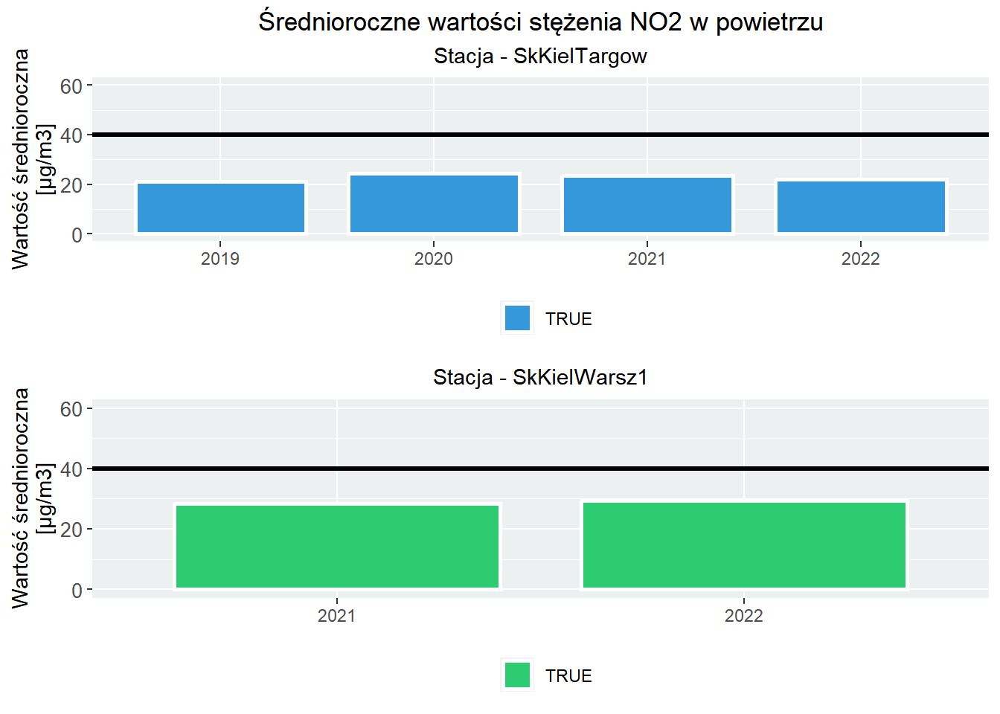
Podsumowując, mimo, że z pierwszych wykresów mogłoby wydawać się, że poziom stężenia NO2 w Kielcach w latach 2018-2022 był przekraczany tak tutaj widać doskonale, że w każdym roku kalendarzowym pomiary na stacjach ukazywały wyniki poniżej maksymalnych dopuszczalnych poziomów zanieczyszczeń w powietrzu, co pokazuje że jakość powietrza nie jest zła w porównaniu np. do innych większych miast w Polsce.
5. Warunki meteorologiczne a steżenia zanieczyszczeń powietrza
Aby dokładniej przeanalizować sprawę zanieczyszczeń musimy zbadać nie tylko pomiary z urządzeń, w tym rozdziale przyjrzymy się innym czynnikom mogącym wpływać na stężenia substancji w powietrzu, np. warunki atmosferyczne i takie czynniki jak: siła i kierunek wiatru, temperatura czy wilgotność powietrza.
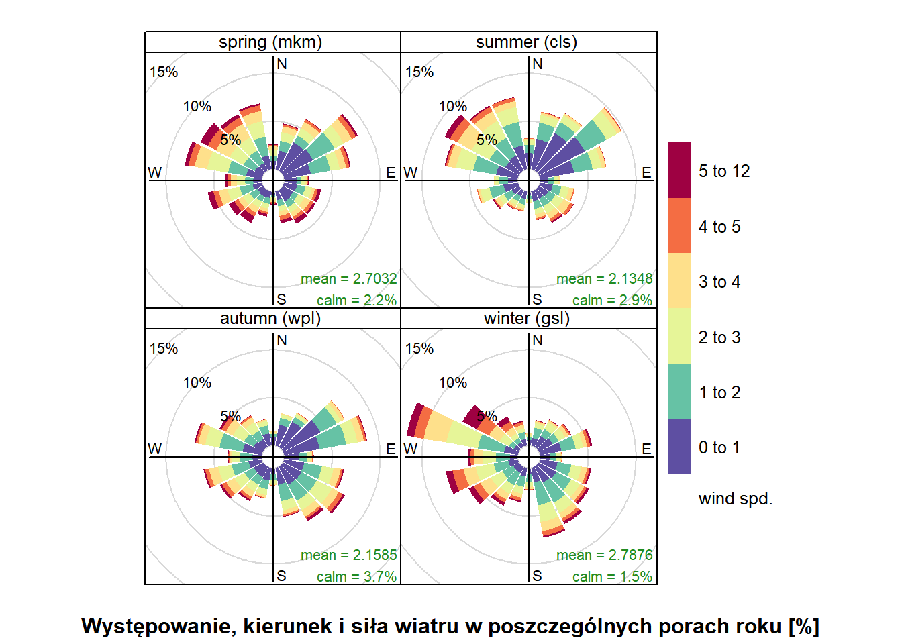
Jak widać najmocniejszy wiatr rejestrowany był zimą oraz wiosną, słabszy latem i jesienią. Z tego względu stężenia zanieczyszczeń powinny się różnić między zimą, wiosną a latem i jesienią ponieważ wiatr powoduje zmniejszenie zanieczyszczenia powietrza.
Sprawdźmy jak wygląda stężenie NO2 w Kielcach z uwzględnieniem kierunku wiatru:
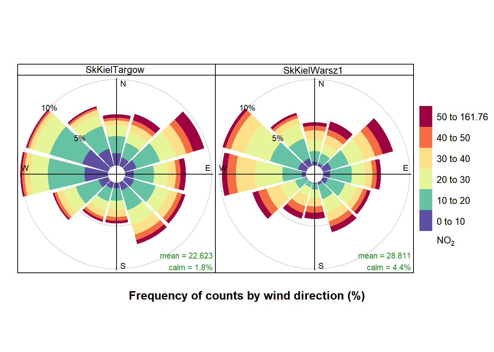
Widzimy, że w przypadku stacji SkKielTargow najczęściej oddziaływuje wiatr z kierunku północno-wschodniego oraz zachodniego/północno-zachodniego. Źródłem zanieczyszczeń z tych kierunków mogą być autobusy kursującego w okolicach stacji a także zakłady przemysłowe znajdujące się na zachód od stacji.
Jeśli chodzi o stacje SkKielWarsz1 to tutaj także najczęściej występują wiatry z kierunków północno-wschodniego oraz zachodniego/północno-zachodniego. W tym przypadku prawdopodobnie za wysokie stężenie NO2 w powietrzu odpowiedzialny jest transport drogowy iż stacja znajduje się zaraz obok wielopasmowej ulicy, po której może poruszać się wiele pojazdów.
5.1 Badanie źródła emisji pyłu PM10 w Kielcach
Wyświetl lub zwiń kod
aqm_met %>%
filter(kod == "SkKielWarsz1") %>%
polarAnnulus(pollutant = "PM10",
period = "hour")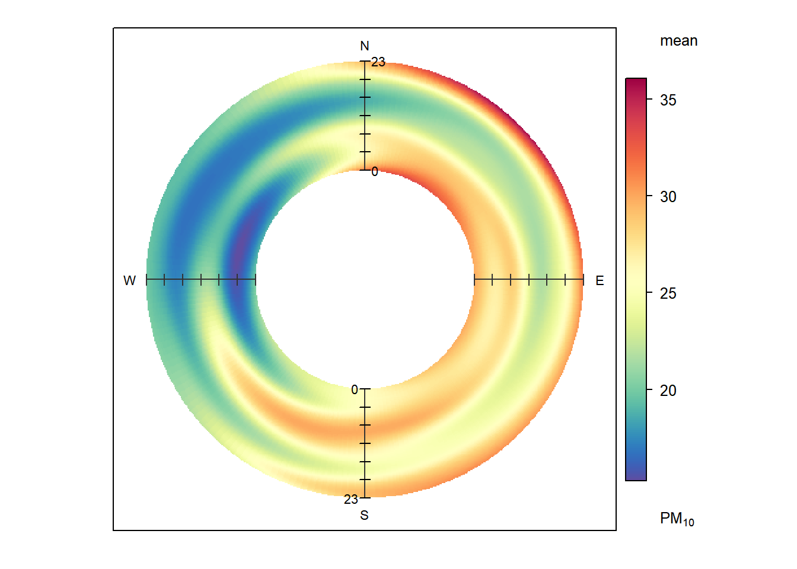
Widać, że stężenie jest największe w godzinach nocnych, wysoki poziom utrzymuje się do około godziny 13. spowodowane może byc to przez mniejszy ruch pojazdów co oznacza mniejszą emisję pyłów z silników spalinowych a w rezultacie wzrostem stężenia pyłu PM10. Kolejnym czynnikiem może być palenie w piecu w godzinach nocnych. W nocy często występuje stabilizacja atmosferyczna, co oznacza, że powietrze jest mniej wietrzne. W takich warunkach pyły mają tendencję do osadzania się bliżej powierzchni ziemi, zamiast być rozprzestrzeniane w atmosferze. To może prowadzić także do wzrostu stężenia pyłów PM10
Wyświetl lub zwiń kod
aqm_met %>%
polarPlot(pollutant = "PM10",
x = "air_temp",
wd = "wd",
type = "kod",
statistic = "max", auto.text = T)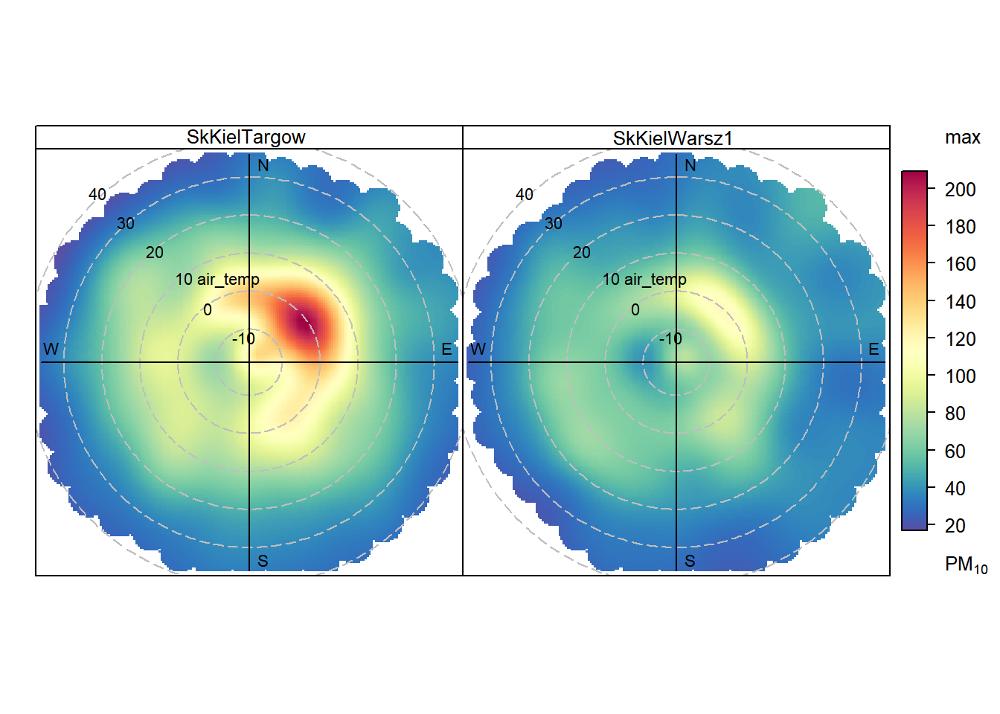
Z powyższego wykresu możemy wywnioskować,że główynm emitentem zanieczyszczeń pyłem PM10 będzie ogrzewanie domowe, z tego względu że przekraczany dozwolony dobowy poziom zanieczyszczeń powietrza pyłem PM10 występuje w godzinach nocnych. Pomóc w zmniejszeniu stężenia powinna np. Wymiana starych pieców grzewczych.
6. Cykliczność zmian stężeń
W tym rozdziale przyjrzymy się, jak zmieniało się stężenie w zależności od godziny, dnia, tygodnia, miesiąca
Wyświetl lub zwiń kod
aqm_met %>%
selectByDate(year = 2018:2022) %>%
filter(kod %in% c("SkKielTargow", "SkKielWarsz1")) %>%
timeVariation(pollutant = c("NO2"),
group = "kod",
difference = T)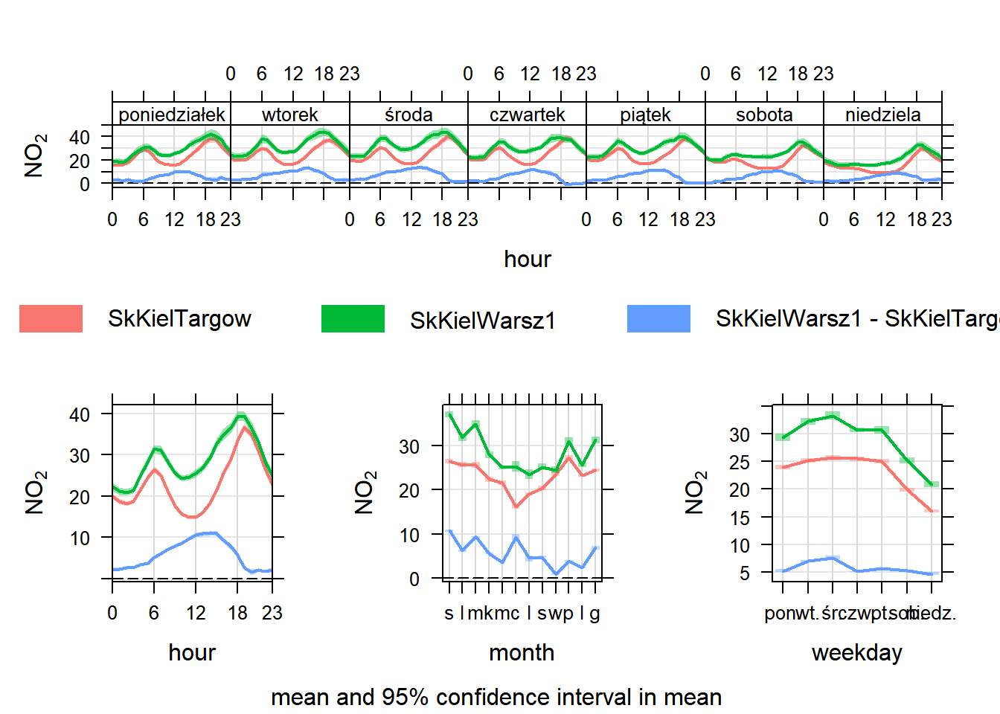
Widzimy, że wzrost NO2 w latach 2018-2022 następował w godzinach nocnych, największe stężenie występowało w miesiącach jesienno-zimowych co potwierdza wcześniejsze tezy że źródłem zanieczyszczeń są głównie piece grzewcze. Widać wyraźnie także to, że wraz z upływem dni tygodnia stężenie miało tendencję spadkową.
Wyświetl lub zwiń kod
aqm_met %>%
selectByDate(year = 2018:2022) %>%
filter(kod %in% c("SkKielTargow", "SkKielWarsz1")) %>%
timeVariation(pollutant = c("NO2","PM10","C6H6"),
difference = F,
normalise = T)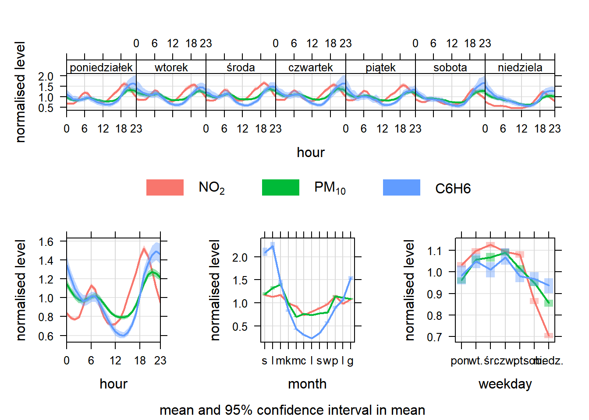
Na powyższym wykresie widać pozostałe, wspólne dla obu stacji stężenia mierzonych substancji, zmienność wszystkich zanieczyszczeń jest podobna, tendencje spadkowe w podobnych okresach, zarówno jeśli chodzi o rozkład godzinowy, miesięczny oraz dni tygodnia.
7.Trendy
W tym rozdziale za pomocą,funkcji ‘trendLevel’ pokazałem, jak wzrasta stężenie NO2 w oparciu o prędkość wiatru w latach 2018-2022 dla stacji SkKielTargow.
Wyświetl lub zwiń kod
aqm_met %>%
filter(kod %in% c("SkKielTargow")) %>%
selectByDate(year = 2018:2022) %>%
trendLevel(pollutant = "NO2",
type = "year",
x = "month",
y = "ws",
n.levels = c(12,5,4))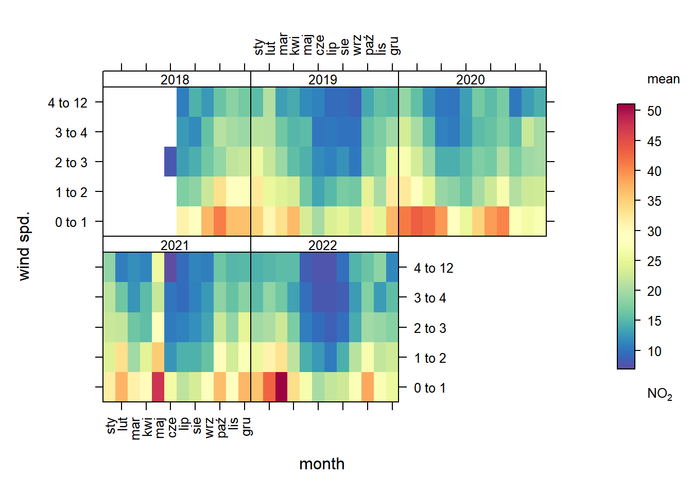
Widać, że na przestrzeni lat 2018-2022 poziom stężenia NO2 w powietrzu przy niskiej prędkości wiatru wzrastał znacznie, najbardziej w 2022 roku, we wcześniejszych latach wzrost ten był łagodniejszy
Następnie za pomoca funkcji ‘TheilSen’ przedstawiłem jak kształtuje się stężenie w zależności od kierunku wiatru. Na wykresie widać że wiatr południowy powoduje, że poziom zanieczyszczenia jest mniejszy niż, gdy wiatr wieje z innych kierunków. Najbardziej szkodliwe są wiatry: północno-wschodni, wschodni i południowo-wschodni.
Wyświetl lub zwiń kod
aqm_kielce <- aqm_met %>%
filter(kod == "SkKielTargow") %>%
TheilSen(pollutant = c("NO2"),
deseason = T,
type = "wd",
x.relation = "free",
y.relation = "free")[1] "Taking bootstrap samples. Please wait."
[1] "Taking bootstrap samples. Please wait."
[1] "Taking bootstrap samples. Please wait."
[1] "Taking bootstrap samples. Please wait."
[1] "Taking bootstrap samples. Please wait."
[1] "Taking bootstrap samples. Please wait."
[1] "Taking bootstrap samples. Please wait."
[1] "Taking bootstrap samples. Please wait."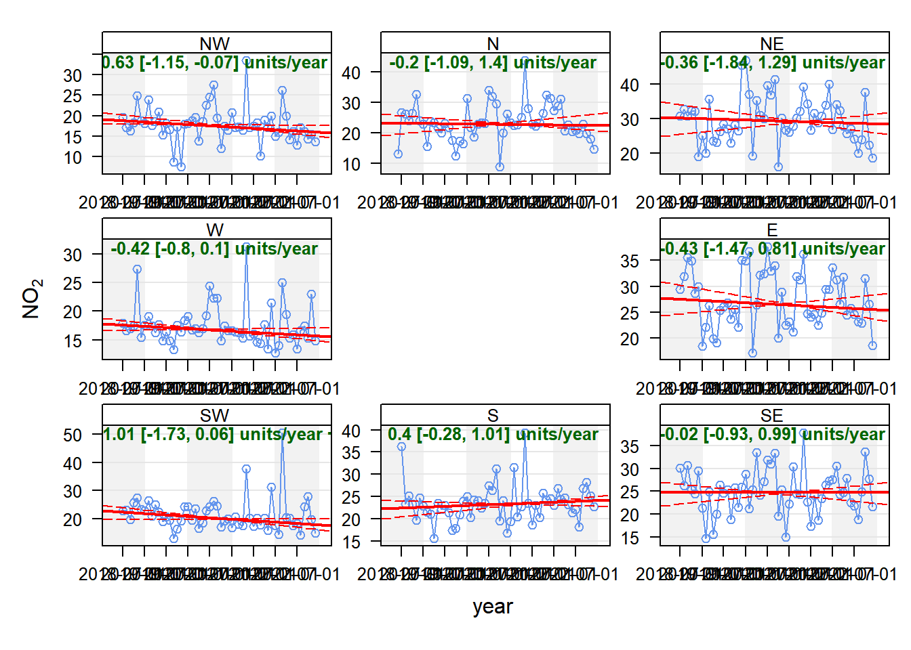
Sprawdziłem też czy wilgotnośc ma wpływ na spadek bądź wzrost stężenia NO2, tym razem dla stacji SkKIelWarsz1, jednak jak widać na wykresie poniżej ciężko jednoznacznie określić, czy wahania wilgotności wpływaja na poziom stężenia NO2, ponieważ zarówno przy niskiej wilgotnośći jak i przy zakresie 92.9-100 poziom dopuszczalny został przekroczony.
Wyświetl lub zwiń kod
#| code-fold: true
aqm_kielce <- aqm_met %>%
filter(kod == "SkKielWarsz1") %>%
TheilSen(pollutant = c("NO2"),
deseason = T,
type = "RH",
x.relation = "free",
y.relation = "free")[1] "Taking bootstrap samples. Please wait."
[1] "Taking bootstrap samples. Please wait."
[1] "Taking bootstrap samples. Please wait."
[1] "Taking bootstrap samples. Please wait."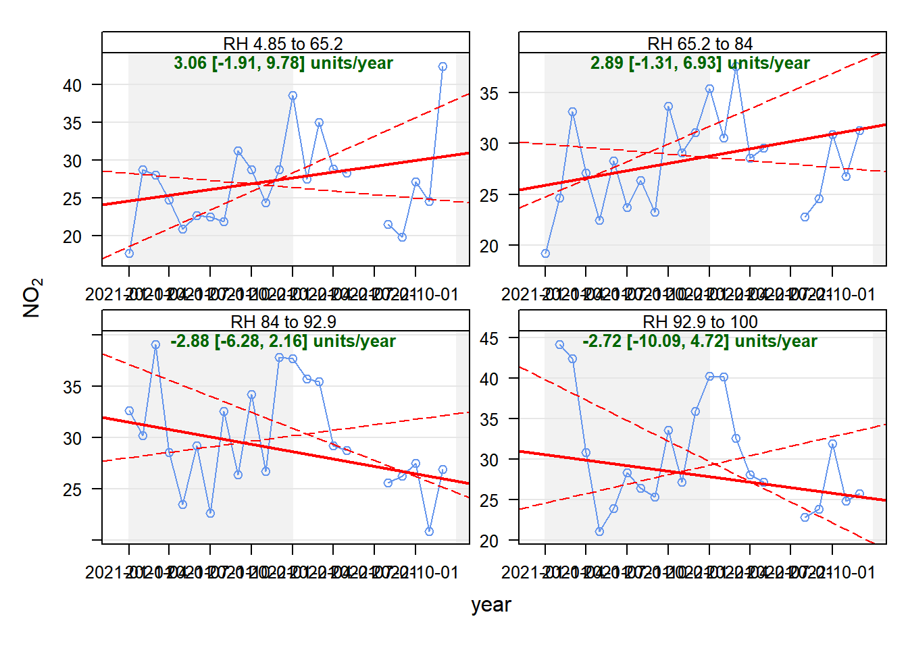